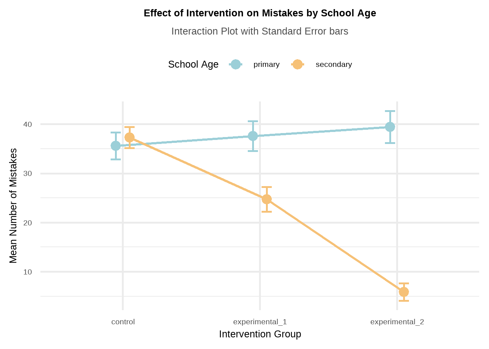
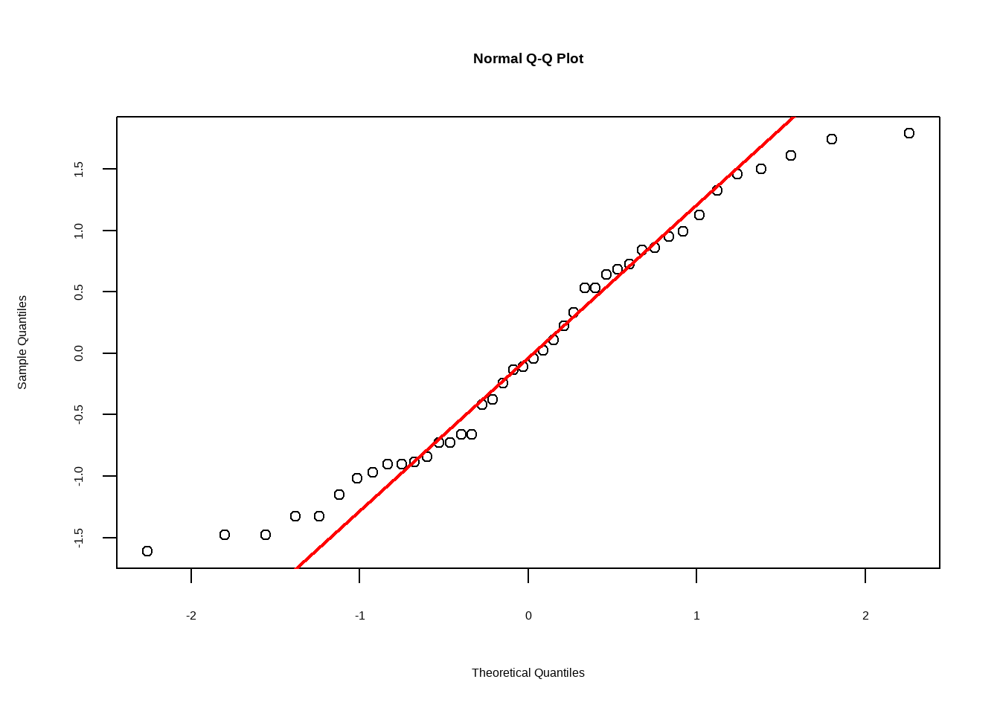
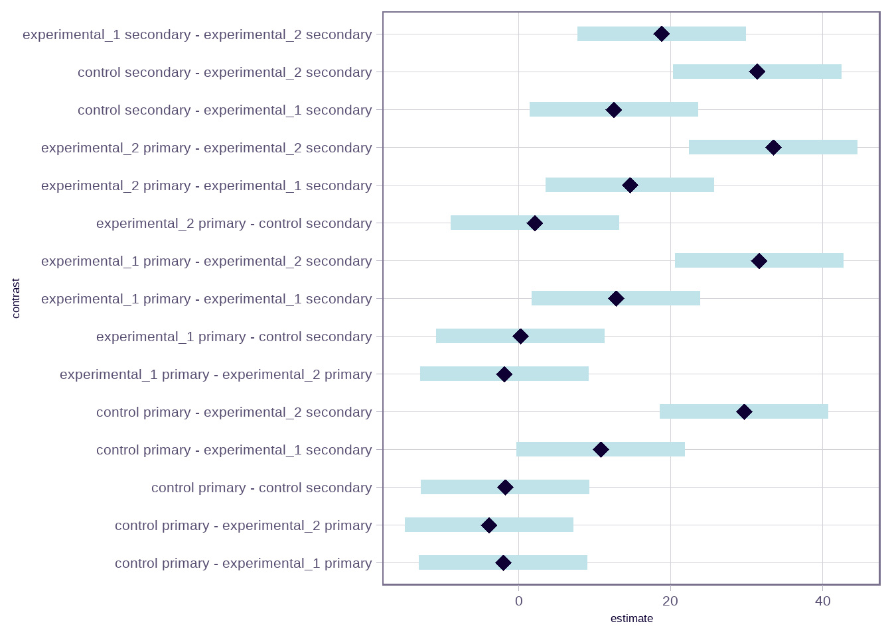

# Required packages for this R script
library(tidyverse)
library(rstatix)
library(dlookr)
library(emmeans)
library(ggsci)
library(readxl)6 Two-way between-subjects Analysis of Variance (Two-way ANOVA) in R
First, we load the following R packages in our R session:
6.1 Introduction
A research design is not limited to examining the effects of a single independent variable. In this lecture, we explore how to incorporate a second independent variable. When a research design involves two independent categorical variables (Factors) and one continuous dependent variable, a Two-Way Between-Subjects ANOVA is the appropriate statistical test.1
1 A design that includes multiple independent variables is known as a factorial design, where each level of one independent variable is combined with each level of the other.
After obtaining a significant ANOVA result, it is essential to conduct post hoc tests that account for the number of comparisons to ensure accurate statistical interpretation.
6.2 Research question and anova assumptions
Assume that researchers are interested in exploring the role of analogical thinking in the problem-solving skills of children and adolescents. The researchers sample 21 primary school students (6th grade students from “Dimotiko,” aged 11–12) and 21 secondary school students (3rd grade students from “Gymnasium,” aged 14–15). The students are then randomly assigned to one of three groups, each consisting of 7 students: a control group, experimental group 1 (exposure to similar examples without instructions), and experimental group 2 (exposure to similar examples with instructions). The outcome measured is the number of mistakes made while attempting to solve the problems.
The primary question of interest is whether the intervention and school age affect the number of mistakes. Specifically, we aim to address the following questions:
Does the number of mistakes differ across intervention groups?
Does the number of mistakes differ by school age?
Does the effect of the intervention on the number of mistakes depend on school age (i.e., is school age a moderator)?
6.2.1 Hypothesis testing for the two-way ANOVA test
To address the research questions, we test three distinct sets of hypotheses: two for the Main Effects (the individual factors) and one for the Interaction Effect (how the factors combine).
6.2.2 Assumptions
The standardized residuals should be approximately normally distributed (Shapiro-Wilk test, normal Q-Q plot).
The variance of the number of mistakes should be roughly equal across all groups (Levene’s test of homogeneity of variance).
6.3 Import dataset and process the data variables
If the dataset mistakes is saved in the subfolder named “data” of our RStudio project, we can read it with the read_excel() function from readxl package as follows:
dat <- read_excel("data/mistakes.xlsx")
dat# A tibble: 42 × 3
intervention school_age mistakes
<chr> <chr> <dbl>
1 control secondary 38
2 control secondary 47
3 control secondary 42
4 control secondary 37
5 control secondary 33
6 control secondary 31
7 control secondary 33
8 control primary 34
9 control primary 39
10 control primary 37
# ℹ 32 more rows
The dataset consists of 42 students (rows) and is organized in a “long” format. It includes three variables (columns): intervention (first independent variable, or factor A), school age (second independent variable, or factor B), and number of mistakes (dependent variable).
The independent variables should be converted from character type to factors (<fct>) using the factor() function within mutate().
dat <- dat |>
mutate(intervention = factor(intervention),
school_age = factor(school_age))
dat# A tibble: 42 × 3
intervention school_age mistakes
<fct> <fct> <dbl>
1 control secondary 38
2 control secondary 47
3 control secondary 42
4 control secondary 37
5 control secondary 33
6 control secondary 31
7 control secondary 33
8 control primary 34
9 control primary 39
10 control primary 37
# ℹ 32 more rows6.4 Descriptive statistics and plots
We use functions from the dplyr and dlookr packages to obtain summary statistics.
First, we calculate the overall (grand) mean of the number of mistakes across all students:
mean(dat$mistakes)[1] 30.07143Next, we compute marginal means2 of the main effects.
2 Marginal means are the means of each level of one independent variable, averaged across all levels of the other independent variable(s). They are used to summarize the main effect of a factor by collapsing over the other factor(s).
Marginal means of Intervention
The marginal means summarize the main effect of intervention by averaging the number of mistakes for each intervention level across all levels of the other factor (school age).
dat |>
group_by(intervention) |>
describe(mistakes) |>
select(intervention, n, mean, sd, p25, p50, p75, skewness, kurtosis)# A tibble: 3 × 9
intervention n mean sd p25 p50 p75 skewness kurtosis
<fct> <int> <dbl> <dbl> <dbl> <dbl> <dbl> <dbl> <dbl>
1 control 14 36.4 6.28 33 37 39.8 0.0256 -0.470
2 experimental_1 14 31.1 9.70 22.5 30 39.8 0.307 -1.32
3 experimental_2 14 22.6 18.6 6.5 20.5 36.2 0.223 -1.64 These summaries show the average number of mistakes for each intervention group, collapsed across levels of school age.
Marginal means of school age
Similarly, these marginal means reflect the main effect of school age:
dat |>
group_by(school_age) |>
describe(mistakes) |>
select(school_age, n, mean, sd, p25, p50, p75, skewness, kurtosis)# A tibble: 2 × 9
school_age n mean sd p25 p50 p75 skewness kurtosis
<fct> <int> <dbl> <dbl> <dbl> <dbl> <dbl> <dbl> <dbl>
1 primary 21 37.5 7.68 31 37 44 0.0780 -1.26
2 secondary 21 22.6 14.3 10 22 33 -0.0979 -1.18These summaries show the average number of mistakes for each school age group, collapsed across levels of intervention.
Cell means (estimated marginal means)
The cell means represent the effect of one factor at specific levels of the other factor.
dat |>
group_by(intervention, school_age) |>
describe(mistakes) |>
select(intervention, school_age, n, mean, sd, p25, p50, p75, skewness, kurtosis)# A tibble: 6 × 10
intervention school_age n mean sd p25 p50 p75 skewness kurtosis
<fct> <fct> <int> <dbl> <dbl> <dbl> <dbl> <dbl> <dbl> <dbl>
1 control primary 7 35.6 7.18 30.5 37 39.5 -0.155 -0.820
2 control secondary 7 37.3 5.68 33 37 40 0.785 -0.176
3 experimental… primary 7 37.6 7.96 30 41 43.5 -0.225 -2.34
4 experimental… secondary 7 24.7 6.65 20 22 28 1.12 -0.357
5 experimental… primary 7 39.4 8.54 33 37 46.5 0.237 -1.89
6 experimental… secondary 7 5.86 4.63 2.5 6 9 -0.210 -1.26 This summary produces the mean number of mistakes for every cell defined by the combinations of intervention and school age.
We create an interaction plot to illustrates the effect of intervention on Mistakes for primary and secondary school students.
ggplot(dat, aes(x = intervention, y = mistakes,
color = school_age, group = school_age)) +
stat_summary(fun = mean, geom = "line", linewidth = 1.2,
position = position_dodge(0.2)) +
stat_summary(fun = mean, geom = "point", size = 4,
position = position_dodge(0.2)) +
stat_summary(fun.data = mean_se, geom = "errorbar", width = 0.15,
linewidth = 1, position = position_dodge(0.2)) +
scale_color_iterm("Rose Pine") +
theme_minimal(base_size = 20) +
labs(title = "Effect of Intervention on Mistakes by School Age",
subtitle = "Interaction Plot with Standard Error bars",
y = "Mean Number of Mistakes", x = "Intervention Group",
color = "School Age") +
theme(plot.title = element_text(face = "bold", size = 20, hjust = 0.5),
plot.subtitle = element_text(hjust = 0.5, color = "gray30"),
legend.position = "top")
The resulting plot shows an interaction because the lines are not parallel. In this example, school age is a moderator.
6.5 Define the ANOVA model
First, we define the ANOVA model using the lm() function. The formula mistakes ~ intervention * school_age expands to include the main effects for each factor as well as their interaction term.
anova_model <- lm(mistakes ~ intervention * school_age, data = dat)This create a model object named anova_model, which stores the mathematical association between the factors and the number of mistakes.
6.6 Check ANOVA Assumptions
6.6.1 Normality test and Q-Q plot
We can conduct a Shapiro-Wilk test to assess the normality of the residuals from the ANOVA model:
# Get raw residuals
resids <- residuals(anova_model)
# Get standardized residuals
std_resids <- scale(resids)
# Run Shapiro-Wilk Test
shapiro.test(std_resids)
Shapiro-Wilk normality test
data: std_resids
W = 0.95328, p-value = 0.08471The Shapiro-Wilk test of normality suggests normal distributions (p=0.08 > 0.05; \(H_o\) is not rejected).
We can also examine the normality assumption using a normal quantile plot (Q-Q plot) of the standardized residuals:
# Q-Q plot
qqnorm(std_resids)
# add a reference line
qqline(std_resids, col = "red", lwd = 2)
The data points mostly fall along the diagonal line, indicating that the residuals are approximately normally distributed.
6.6.2 Equality of variances
dat |>
levene_test(mistakes ~ intervention * school_age)# A tibble: 1 × 4
df1 df2 statistic p
<int> <int> <dbl> <dbl>
1 5 36 0.658 0.658Since p = 0.66 > 0.05, the \(H_0\) of the Levene’s test is not rejected and the variances are comparable.
6.7 Perform ANOVA test (omnibus analysis)
We run a two-way ANOVA using the function anova_test() from the rstatix package, testing whether the outcome variable mistakes is significantly affected by intervention, school_age, and their interaction.
dat |>
anova_test(mistakes ~ intervention * school_age, detailed = T)ANOVA Table (type II tests)
Effect SSn SSd DFn DFd F p p<.05 ges
1 intervention 1354.429 1714.857 2 36 14.217 2.81e-05 * 0.441
2 school_age 2332.595 1714.857 1 36 48.968 3.31e-08 * 0.576
3 intervention:school_age 2200.905 1714.857 2 36 23.102 3.51e-07 * 0.562We observe that both main effects—intervention (F = 14.2, p <0.001) and school age (F = 48.9, p <0.001), are significant. Additionally, the interaction is also significant (F = 23.1, p <0.001).
A key principle in interpreting and reporting factorial analysis results is that interactions take precedence over main effects. This is because interactions offer a more detailed and comprehensive understanding of the data.
6.8 Simple effects analysis
The effect of intervention separately for each level of school_age is:
# school age as moderator
dat |>
group_by(school_age) |>
anova_test(mistakes ~ intervention, error = anova_model)# A tibble: 2 × 8
school_age Effect DFn DFd F p `p<.05` ges
* <fct> <chr> <dbl> <dbl> <dbl> <dbl> <chr> <dbl>
1 primary intervention 2 36 0.547 0.584 "" 0.029
2 secondary intervention 2 36 36.8 0.000000002 "*" 0.671The number of mistakes in the intervention groups differs significantly only among secondary school students (F = 36.7, p <0.001).
We can also examine the effect of school_age at each level of intervention:
# intervention as moderator
dat |>
group_by(intervention) |>
anova_test(mistakes ~ school_age, error = anova_model)# A tibble: 3 × 8
intervention Effect DFn DFd F p `p<.05` ges
* <fct> <chr> <dbl> <dbl> <dbl> <dbl> <chr> <dbl>
1 control school_age 1 36 0.216 6.45e- 1 "" 0.006
2 experimental_1 school_age 1 36 12.1 1 e- 3 "*" 0.252
3 experimental_2 school_age 1 36 82.8 7.25e-11 "*" 0.697The number of mistakes between primary school and secondary school students are significant for the experimental groups (F = 12.2, p = 0.001 and F = 82.8, p <0.001).
NOTE: The error = anova_model argument specifies that the residual variance from the full two-way ANOVA model should be used as the error term.
6.9 Conduct Post hoc tests
Tukey’s test is appropriate when we want to make all possible pairwise comparisons between a large set of means, assuming the variances are equal.
cell_means <- emmeans(anova_model, ~ intervention * school_age)
tukey_pairs <- pairs(cell_means, adjust = "tukey")
tukey_pairs contrast estimate SE df t.ratio
control primary - experimental_1 primary -2.000 3.69 36 -0.542
control primary - experimental_2 primary -3.857 3.69 36 -1.046
control primary - control secondary -1.714 3.69 36 -0.465
control primary - experimental_1 secondary 10.857 3.69 36 2.943
control primary - experimental_2 secondary 29.714 3.69 36 8.054
experimental_1 primary - experimental_2 primary -1.857 3.69 36 -0.503
experimental_1 primary - control secondary 0.286 3.69 36 0.077
experimental_1 primary - experimental_1 secondary 12.857 3.69 36 3.485
experimental_1 primary - experimental_2 secondary 31.714 3.69 36 8.597
experimental_2 primary - control secondary 2.143 3.69 36 0.581
experimental_2 primary - experimental_1 secondary 14.714 3.69 36 3.989
experimental_2 primary - experimental_2 secondary 33.571 3.69 36 9.100
control secondary - experimental_1 secondary 12.571 3.69 36 3.408
control secondary - experimental_2 secondary 31.429 3.69 36 8.519
experimental_1 secondary - experimental_2 secondary 18.857 3.69 36 5.111
p.value
0.9940
0.8991
0.9971
0.0583
<0.0001
0.9957
1.0000
0.0153
<0.0001
0.9917
0.0039
<0.0001
0.0187
<0.0001
0.0001
P value adjustment: tukey method for comparing a family of 6 estimates We can also display the 95% family-wise confidence intervals for the differences in mean number of mistakes between groups:
plot(tukey_pairs) +
theme(axis.text = element_text(size = 16))
Interpretation
Simple effects tests were conducted using the Tukey adjustment to maintain an alpha level of 0.05. Results showed that the effect of instructions on the number of mistakes depends on school age.
Primary school students showed a relatively stable number of mistakes across all three groups, with their mistakes remaining high even with experimental interventions.
Secondary school students demonstrated a significant decrease in mistakes. Specifically, there was a significant reduction in mistakes when comparing the control group to the group exposed to examples (MD = 12.6, p = 0.019). Adding instructions led to an even greater reduction in mistakes (MD = 18.9, p <0.001), indicating that explicit guidance further enhanced their problem-solving skills.
Additionally, secondary school students made significantly fewer mistakes than primary school students in both experimental interventions, suggesting that older children may have a stronger ability to apply analogical reasoning in problem-solving after being exposed to similar examples and instructions.